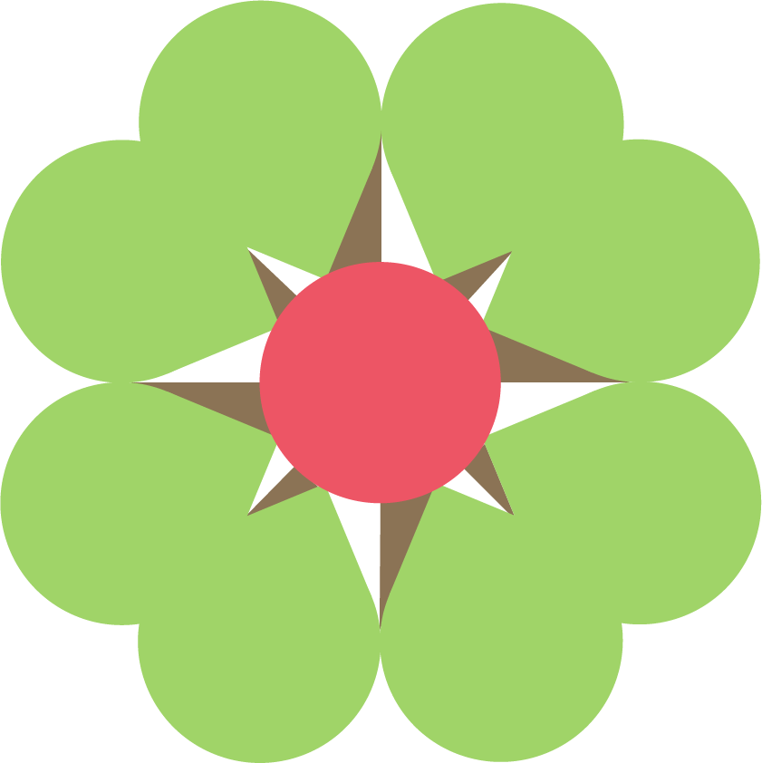

Software · With Cornell AgriTech & NASA Acres
Every.Farm
Data collection and mapping tools for every farm, built in partnership with Cornell AgriTech and in collaboration with NASA Acres. Every.Farm brings field data, maps, and crop research together in one place so you can see what fits your land and why.
- Crop Picker. Describe your farm and see which of 81 crops fit it. Every figure links back to the primary source it came from.
- Polyculture knowledge. Which crops help or harm each other, measured intercrop yields, and what each crop needs from the land.
- Field mapping. Collect data in the field and see it on the map: boundaries, zones, sensor scans, and layers.